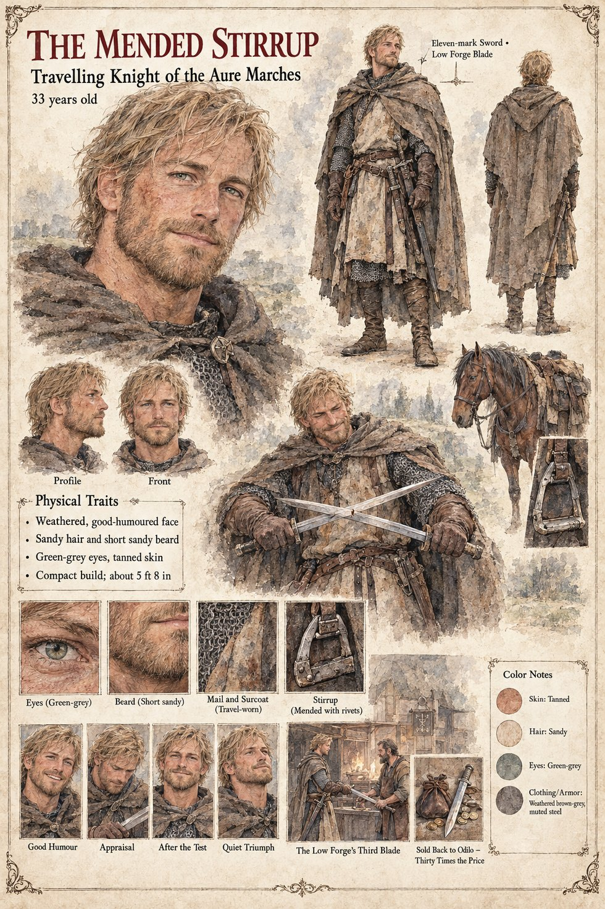

The Mended Stirrup
Travelling knight of the Aure Marches · carries a Low Forge blade · 33 years old by his sheet
A travelling knight of the Aure marches, known on his sheet only by the thing he rides on: a stirrup mended with rivets. He carries an eleven-mark sword, a Low Forge blade, and his sheet's two scenes are about that sword. In the first, The Low Forge's Third Blade, he stands at a smith's forge with a sword in his hand; in the second, Sold Back to Odilo, Thirty Times the Price, a leather purse of coin lies beside the blade. The Odilo of the caption is the Duke of Tarnwald's steward, Odilo, not the Hierarch Odilo of Cases 2231 and 0202: it is the steward who, on the Rich Merchant's Son's page, rides the Aure marches buying back the past. The publication notes give the knight's whole transaction: he buys the Low Forge's third blade for four marks of silver and notches his own eleven-mark sword against it (Chapter 5), and sells that blade back to the steward at thirty times the price (Chapter 9).
His main figure stands in a weathered cloak with two swords crossed against his chest, and his expression panels run Good Humour, Appraisal, After the Test and Quiet Triumph. Written from the sheet, from what the other Case 4181 pages already say, and from the character notes in the case's publication-prep file; the manuscript itself was not to hand. His age of 33, his compact build of about 5 ft 8 in, weathered good-humoured face, sandy hair and short sandy beard, green-grey eyes, tanned skin, travel-worn mail under a brown-grey surcoat and the horse and mended stirrup are the sheet's own.